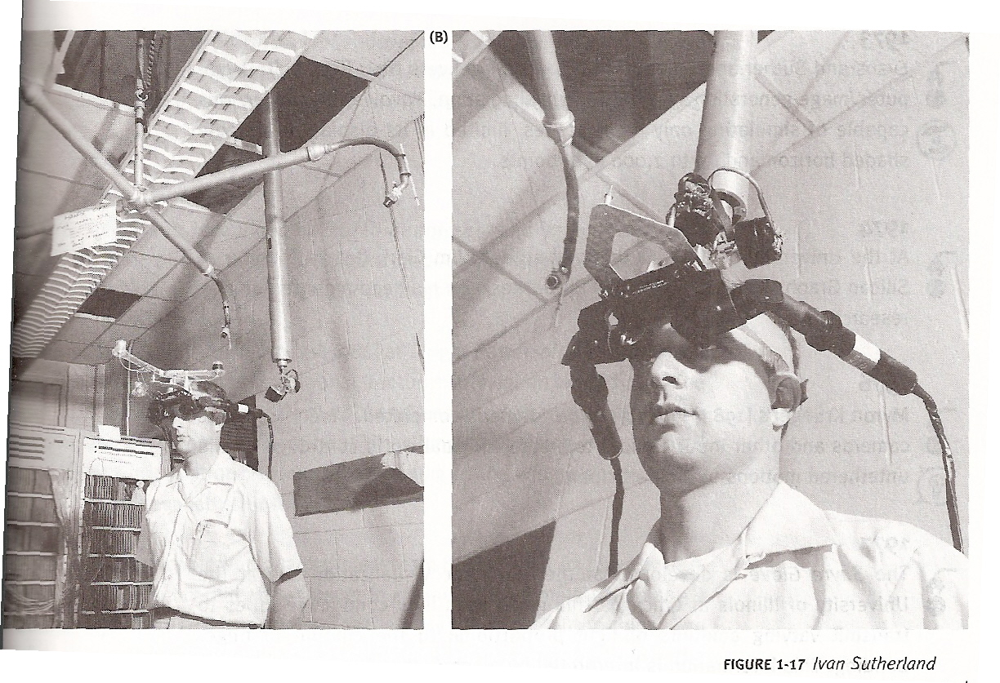

Sword of Damocles - First VR headset ever. Created by Ivan Sutherland, this primitive head-mounted display was so heavy it had to be suspended from the ceiling. It proved the concept of VR was possible and laid the foundation for all future development, even though it could only display simple wireframe graphics.